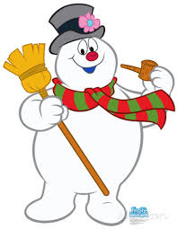

10 of the Most Popular Characters according to me:
Santa Claus
Appears in several holiday movies
Jolly, Old Man who brings gifts to Children
"HO HO HO!"
Grinch
Appears in How the Grinch Stole Christmas
Learns to love christmas
Rudolph
Appears in Rudolph the Red-Nose Reindeer
"Rudolph the Red-Nosed Reindeer had a very shiny nose and if you ever saw it, you would even say it glows... Rudolph with your nose so bright, won't you fly my sleigh tonight?"
Mrs. Claus
Appears in several holiday movies with her husband
Makes Santa's clothes in the North Pole
Buddy the Elf
Appears in the movie Elf
"The best way to spread christmas cheer is singing loud for all to hear!"
Frosty
Appears in Frosty the Snowman
"...Was a jolly happy sould. With a corn cob pipe and a button nose and two eyes made out of coal."

Scrooge
Appears in several versions of A Christmas Carol
"Bah Humbug!"
Clark W. Griswold
Appears in National Lampoon's Christmas Vacation
"And we're gonna have the hap-hap-happiest christmas!"
Cousin Eddie
Appears in National Lampoon's Christmas Vacation
"You serious Clark?"
The Conductor
Appears in The Polar Express
"Seeing is believing. But sometimes the most real things in the world are the things we can't see."